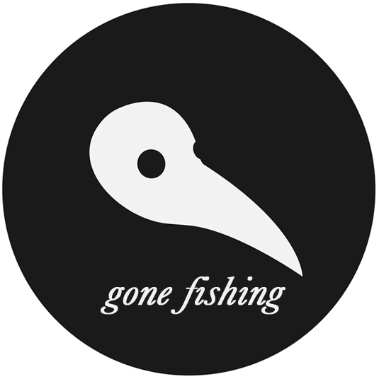

Dear listeners, readers and watchers,
first fold records are hibernating for a bit, (not sure for how long possibly loooooong!!!!)
We would just like to thank those who have supported the fold over it's seven or so years of existence.
We go and not for any one reason but a combination of many.
If you ever streamed our music, listened to it at home, in your car, on your mp3 player or wherever, then thank you, that's why we started in the first place.
Peace, Love, Patience, Forgiveness and Prosperity to All
Primera Pliega